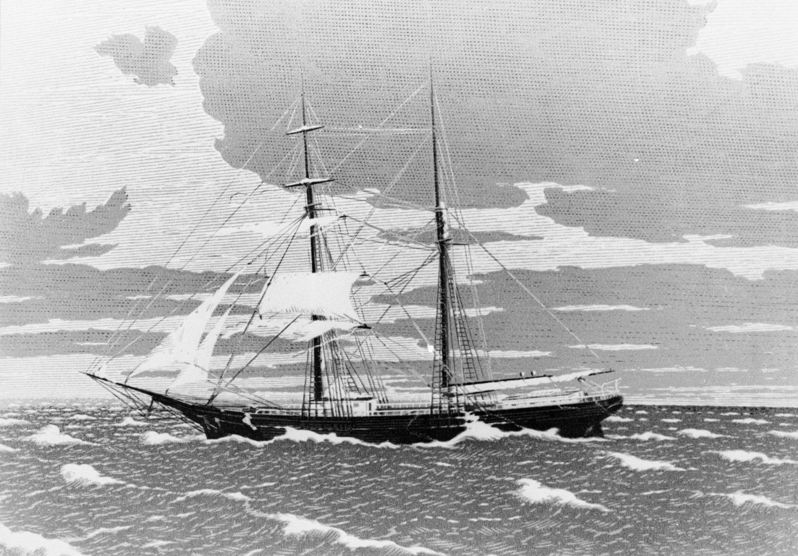

ARCHIVE #006
The Mary Celeste
- Archivo
- ARCHIVE #006
- Nombre del caso
- The Mary Celeste
- Estado
- DESAPARICIÓN SIN EXPLICACIÓN DEFINITIVA
- Ubicación
- Océano Atlántico
- Año
- 1872

EL CASO
El 4 de diciembre de 1872, la embarcación Dei Gratia encontró un barco llamado Mary Celeste navegando sin tripulación en el océano Atlántico.
El barco había salido de Nueva York rumbo a Génova, Italia, con diez personas a bordo: el capitán, su esposa, su hija de dos años y siete tripulantes.
La embarcación fue encontrada en condiciones que permitían continuar navegando, con gran parte de su carga y suministros intactos. Sin embargo, las diez personas habían desaparecido y el bote salvavidas no estaba.
LÍNEA DE TIEMPO
- Antes del 4 de diciembre de 1872 El Mary Celeste salió de Nueva York rumbo a Génova, Italia, con diez personas a bordo.
- 4 de diciembre de 1872 La embarcación Dei Gratia encontró el Mary Celeste navegando sin tripulación en el océano Atlántico.
- Sin fecha registrada El barco fue trasladado a Gibraltar, donde las autoridades realizaron una investigación sobre su estado y las circunstancias de su abandono.
EVIDENCIAS
01. El barco abandonado
La embarcación fue encontrada sin ninguna persona a bordo, pero todavía podía navegar y fue trasladada a Gibraltar.
02. El bote salvavidas desaparecido
El bote de la embarcación no estaba. Esto apunta a que las personas pudieron haber abandonado el barco voluntariamente o bajo una emergencia.
03. La carga intacta
La carga de alcohol industrial permanecía mayormente intacta. No se encontró una explicación definitiva que justificara el abandono.
04. El registro de navegación
El registro y los documentos del barco permiten reconstruir parte del recorrido, pero no explican por qué la tripulación abandonó la nave.
INVESTIGACIÓN
Las autoridades de Gibraltar realizaron una investigación sobre el estado de la embarcación y las circunstancias de su abandono. Se examinaron posibles indicios de violencia, irregularidades y las condiciones del barco.
La investigación no consiguió establecer qué sucedió con las personas a bordo. A lo largo de los años, diferentes reconstrucciones han planteado escenarios de evacuación por temor a una avería, problemas con las bombas o una percepción equivocada del peligro.
TEORÍAS
- Problemas con las bombas: el capitán pudo haber creído que el barco estaba llenándose de agua y ordenado evacuar.
- Fugas o vapores de alcohol: los vapores de la carga pudieron generar temor a una explosión.
- Una evacuación accidental: la tripulación pudo haber abandonado el barco en el bote y perder el control de la situación, sin poder regresar.
- Ataque o violencia: se propusieron teorías de piratería o motín, pero la investigación no encontró pruebas concluyentes que las respaldaran.
PREGUNTAS SIN RESPUESTA
- ¿Por qué abandonaron una embarcación que aparentemente seguía siendo navegable?
- ¿Qué ocurrió con el capitán, su familia y los siete tripulantes?
- ¿Fue una decisión tomada por el capitán o una evacuación de emergencia?
- ¿Qué sucedió después de que abandonaran la nave?
- ¿Por qué nunca se encontraron las diez personas?